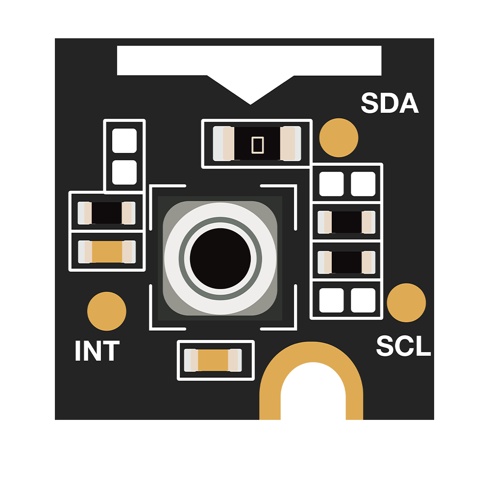

环境传感器1
传感器参数对比
| Parameter | RAK1901 | RAK12003 | RAK1902 | RAK12011 | RAK1906 |
|---|---|---|---|---|---|
| Description | Temperature and Humidity | Infrared Temperature Sensor | Barometric Pressure | Barometer WT | Environmental Sensor |
| accuracy | ±2.0 °C ±2.0% |
±3° C | ±0.1 hPa ±1.5 °C |
±0.1 hPa | ±1.0 ±3 % r.H. ±0.6 hPa |
| range | -40 °C to +125 °C 0 to 100% |
-20 °C to +85 °C | 260-1260 hPa -40 °C to +85 °C |
260-1260 hPa | -40 °C to +85 °C 0 to 100% 300 to 1100 hPa |
| Size (mm) | 10 x 10 | 10 x 10 | 10 x 10 | 10 x 10 | 10 x 10 |
| Input voltage (V) | 1.6~3.6 | 3~3.6 | 1.6~3.6 | 1.7~3.6 | 1.71~3.6 |
| Sleep current (uA) | 0.3 | 2.5 | 1 | 1 | 0.15 |
| Measure current (uA) | 430 | 1400 | 12 | 15 | 340 Humidity 714 Pressure 350 Temperature |
| Communication interface | I2C | I2C | I2C | I2C | I2C |
| connector pin | 24 | 24 | 24 | 24 | 24 |
| Chipset | Sensirion SHTC3 | Melexis MLX90632SLD | ST LPS22HB | ST LPS33HW | BOSCH BME680 |
实物
| RAK1901 | RAK12003 | RAK1902 | RAK12011 | RAK1906 |
|---|---|---|---|---|
| Temperature and Humidity | Infrared Temperature Sensor | Barometric Pressure | Barometer WT | Environmental Sensor |
 |
 |
 |  |
简述 pin角定义和原理图
快速入门指南
https://docs.rakwireless.com/Product-Categories/WisBlock/RAK1901/Quickstart/
https://docs.rakwireless.com/Product-Categories/WisBlock/RAK1902/Quickstart/
https://docs.rakwireless.com/Product-Categories/WisBlock/RAK1906/Quickstart/
https://docs.rakwireless.com/Product-Categories/WisBlock/RAK12003/Quickstart/
https://docs.rakwireless.com/Product-Categories/WisBlock/RAK12011/Quickstart/
https://docs.rakwireless.com.cn/Product-Categories/WisBlock/RAK12011/Quickstart/ 中文版在
.com后面加.cn即可
应用场景
温湿度传感器
气候监测天气测量和预报
温室养殖
现代农林畜牧各产业都有相当数量的温室，温室的湿度控制与温度控制同样重要，把湿度控制在农作物、树木、畜禽等生长适宜的范围，是减少病虫害、提高产量的条件之一。
工业生产
在纺织、电子、精密机器、陶瓷工业等部门，空气湿度直接影响产品的质量和产量。
物品储藏
各种物品对环境均有一定的适应性。湿度过高过低均会使物品丧失原有性能。如在高湿度地区，电子产品在仓库的损害严重，非金属零件会发霉变质，金属零件会腐蚀生锈。
精密仪器的使用保护
许多精密仪器、设备对工作环境要求较高，环境湿度必须控制在一定范围内，以保证它们的正常工作，提高工作效率及可靠性。
地铁环境
地铁乘客流量大，所需新风量变化大。因此地铁的空调负荷变化大，要实现节能必须借助于自动控制的手段。
疫苗冷链存储运输
疫苗储存须有严格的温度控制标准，而正规的疫苗存储配送链应该全程配备温湿度监控设备，以符合药品经营质量管理规范（GSP）的要求。
压力传感器
称重系统
海拔高度测量
应用于液压系统
安全控制系统
压缩机，空调冷设备